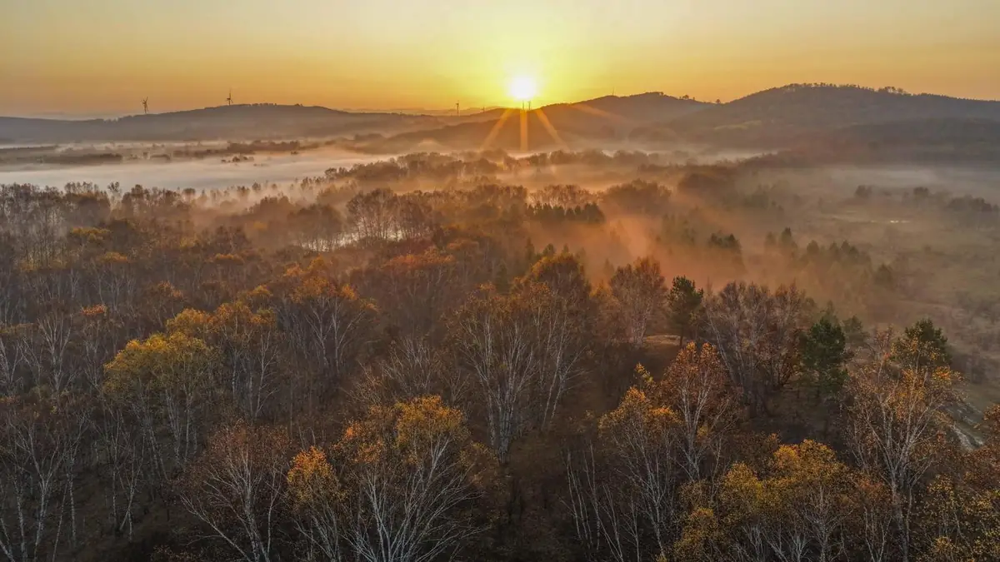
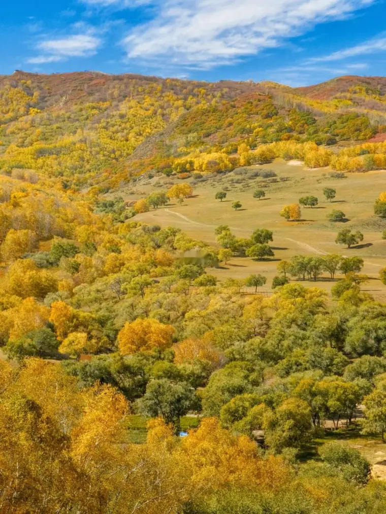
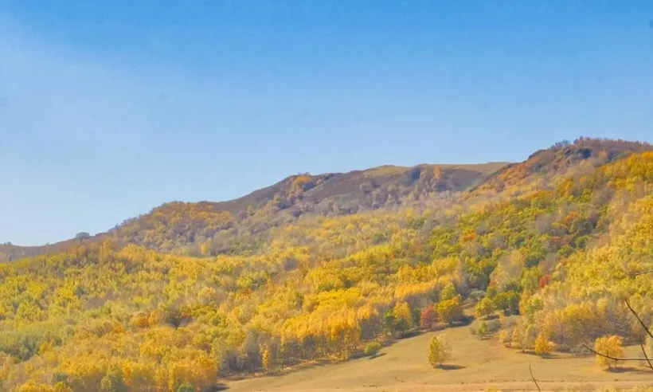
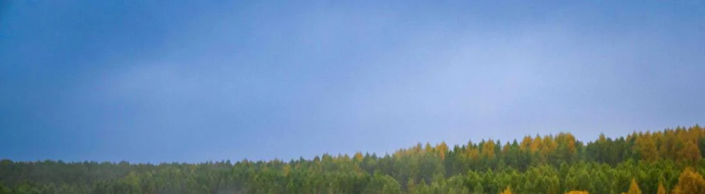
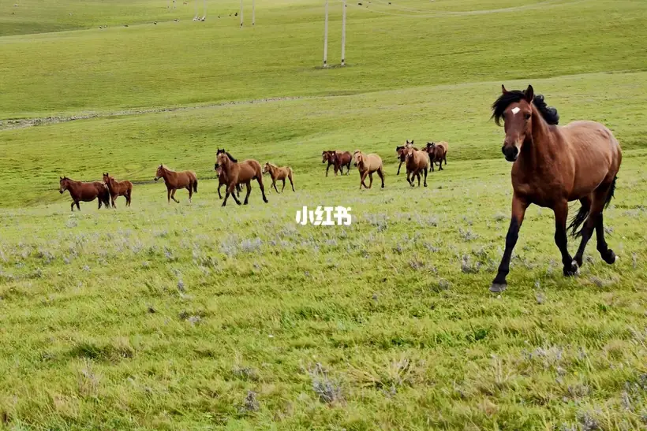
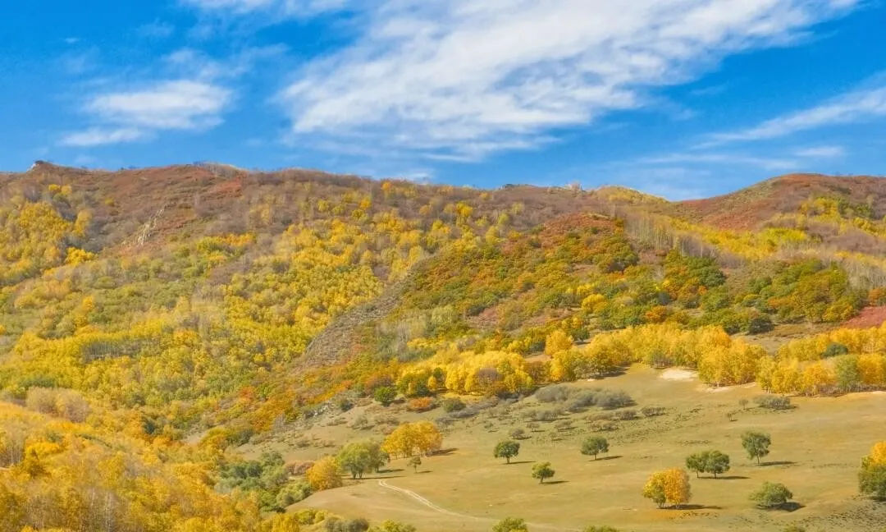
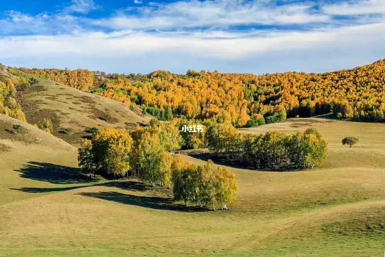
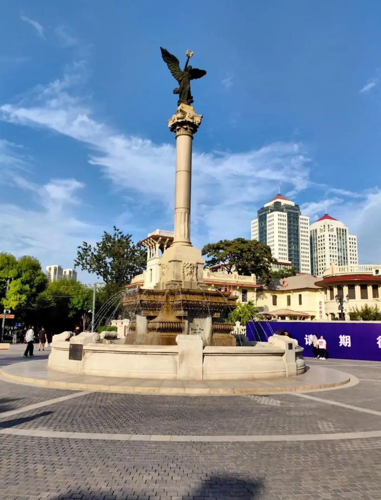
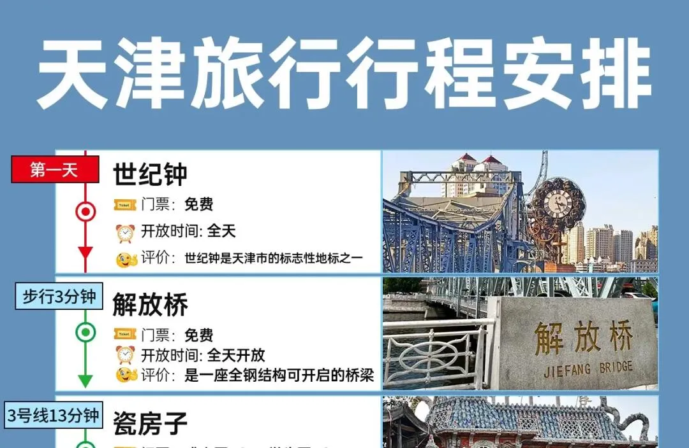
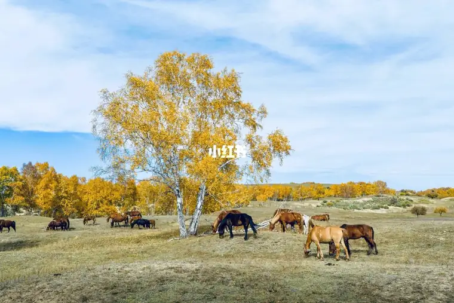

青岛出发 → 天津 → 承德 → 塞罕坝 → 乌兰布统 → 克什克腾 → 回青岛 ｜ 一家三口 · 2026.09.26 — 10.05
| 天 | 日期 | 路线与安排 | 驾驶 | 住宿地 |
|---|---|---|---|---|
| D1 | 9.26 周六 中秋假期 | 青岛 → 天津（约 560 km，中途潍坊服务区休息一次）。下午到：五大道（免费，骑行或步行逛万国洋楼群、民园广场，观光马车不建议坐）→ 瓷房子（¥50，9:00–19:00，外围拍照即可不必进）→ 意式风情区（免费，傍晚灯光亮起更有味道）→ 晚上海河边看天津之眼（¥90 日票／¥138 夜票，9:30–21:30，每周一检修闭馆，世界唯一建在桥上的摩天轮，傍晚去最值）。晚饭煎饼果子（认准绿豆面、不加火腿生菜）、锅巴菜、耳朵眼炸糕。 | 约 560 km 5.5 小时 | 天津市 |
| D2 | 9.27 周日 中秋假期末 | 上午西开教堂（免费，8:30–16:30，天津最大罗曼式教堂）或古文化街（免费，店铺 9:00 开门，十八街麻花可当手信）→ 午饭后出发 → 天津 → 承德（约 380 km）。傍晚到承德，元宝街、武烈河边散步。 | 约 380 km 4.5 小时 | 承德市 |
| D3 | 9.28 周一 请假·错峰 | 承德 → 国家一号风景大道 → 御道口草原森林风景区（桃山湖、太阳湖）。傍晚进塞罕坝机械林场一带住宿。 | 约 280 km 4.5 小时 | 塞罕坝／御道口 |
| D4 | 9.29 周二 请假·错峰 | 上午塞罕坝林海（七星湖、泰丰湖、亮兵台、白桦林）→ 中午过界河（滦河源头）进内蒙古 → 下午到乌兰布统：公主湖、盘龙峡谷，傍晚影视基地／北沟看日落。 | 约 100 km | 乌兰布统 |
| D5 | 9.30 周三 请假·错峰 | 乌兰布统全天：蛤蟆坝（晨昏光影最好）、桦木沟、五彩山、将军泡子、野鸭湖。 | 约 120 km | 乌兰布统 |
| D6 | 10.1 周四 国庆首日·避开热门 | 乌兰布统 → 克什克腾旗经棚镇：达里诺尔湖南岸（草原大海）、贡格尔草原。 | 约 200 km | 经棚／热水塘 |
| D7 | 10.2 周五 人少线 | 黄岗梁 + 热阿线：大兴安岭最高峰，落叶松与白桦的秋色核心带，自驾游公路本身即景点。 | 约 150 km | 经棚／热水塘 |
| D8 | 10.3 周六 返程·两条路二选一 | 方案 A（短路）经棚 → 经山线 → 乌兰布统镇 → 大河口／御道口 → 围场 → 承德，约 420 km；方案 B（高速）经棚 → 赤峰 → 承德，约 620 km。详见下方对比，出发前一天看天气和实时路况再定。晚上承德休整，早点睡。 | A 约 420 km B 约 620 km | 承德市 |
| D9 | 10.4 周日 | 承德 → 北京外围 → 天津 → 德州 → 济南，返程第二段。 | 约 650 km 7 小时 | 济南／德州 |
| D10 | 10.5 周一 国庆假期内 | 济南 → 潍坊 → 青岛，傍晚到家，行程收尾。 | 约 360 km 4 小时 | 到家 🏠 |








世界唯一建在桥上的摩天轮，横跨海河，转一圈约 28 分钟。日票 ¥90、夜票 ¥138，9:30–21:30，每周一检修闭馆，9.26 是周六正好开放。傍晚去最值：白天景+华灯初上一次看全。不坐的话在金刚桥/永乐桥沿岸拍夜景也很出片。其余五大道、意式风情区、海河边都是免费漫游路线，详见 D1 行程。
两山夹一沟的丘陵田园，沟谷里散着村落、木栅栏与牛羊，山顶白桦、山腰梯田、山麓老榆树。日落前 1 小时到，暖金光把树影人影拉长，是坝上公认最耐拍的机位。建议清晨或傍晚各去一次。
乌兰布统的秋色主角就是白桦：树干雪白、树冠金黄，成片立在起伏草坡上。桦木沟一带地形多变，草场、湿地、峡谷、丘陵交错，逆光下最通透。夹皮沟、小河头白桦林也可以顺路看。
金黄落叶松、红黄灌木与绿色草甸同期变色，从山脊到谷底层层铺开，是坝上秋色的主调，沿途自驾随处可停。

达里诺尔湖是草原上的“大海”，南岸可看候鸟；黄岗梁是大兴安岭最高峰，也是热阿线（热水—阿斯哈图）最惊艳的一段，落叶松金黄、山峦如彩色波浪，游客密度明显低于乌兰布统核心区。
| 对比项 | 方案 A · 景区短路 | 方案 B · 赤峰全程高速 |
|---|---|---|
| 路线 | 经棚 → 经山线 → 乌兰布统镇 → 大河口／御道口 → 围场 → 承德 | 经棚 → 丹锡高速 → 赤峰 → 大广高速 → 承德 |
| 路程 / 用时 | 约 420 km，6 小时左右 | 约 620 km，7.5 小时左右（多绕约 200 km） |
| 门票 | 穿行景区，可能需再买一次乌兰布统 120 元／人（3 人约 360 元，御道口票同样另计；是否查票以现场为准） | 不再产生景区门票 |
| 路况 | 前段县道 + 景区路，午后围场—承德方向车流偏多 | 全程高速，服务区密、加油站多，长时间坐车更平稳 |
| 适合的情况 | 想早点到承德、省下近 2 小时；不介意可能多花一张门票 | 不想再买票；当天有雨、或围场方向已堵；希望一路不操心 |
一句话选择：想赶时间、早点到承德泡脚休息 → 走 A（短路）；想不再买票、坐车更稳当、不折腾 → 走 B（高速）。
临场判断：10.3 早上若遇雨雪、或查到围场—承德已明显拥堵，直接切 B 案，别犹豫；两案都在承德落脚，D9 之后的行程不变。
| 日期 | 住宿地 | 建议 | 参考价 |
|---|---|---|---|
| 9.26 | 天津市 | 海河／五大道一带酒店，晚上逛意式风情区、天津之眼方便 | ¥280–400 |
| 9.27 / 10.3 | 承德市 | 避暑山庄外围或武烈河畔商务酒店，晚上逛元宝街方便 | ¥350–500 |
| 9.28 | 塞罕坝·御道口 | 机械林场或御道口镇周边农家院／度假酒店，靠景区门口省时间 | ¥300–450 |
| 9.29 / 9.30 | 乌兰布统 | 红山军马场镇上的宾馆／蒙古包度假村，十一最紧俏，务必提前订 | ¥400–700 |
| 10.1 / 10.2 | 经棚／热水塘 | 经棚镇商务酒店；达里诺尔湖边宾馆旺季约 ¥250 一晚，热水塘温泉酒店更贵 | ¥250–500 |
| 10.4 | 济南／德州 | 市区连锁或商务酒店，靠高速口方便次日出发 | ¥250–350 |
| 项目 | 挂牌价 | 3 人估算 | 备注 |
|---|---|---|---|
| 乌兰布统大景区 | 120 元/人 | ¥360 | 通票，含公主湖、将军泡子等小景点；优惠票种以现场证件为准 |
| 御道口草原森林风景区 | 通票 80 元/人 西环线 60 元/人 | ¥240 | 2026 年开园公告价；各类优惠票种以现场证件为准；月亮湖 30 元、欧洲风情园 10 元单点售票 |
| 塞罕坝机械林场 / 七星湖 | 多数免费 | ¥0 | 2022 年起部分景点免费开放、需实名预约；七星湖、亮兵台等个别点位历史上曾单独售票，以现场为准 |
| 蛤蟆坝 | 0–30 元/人 | ¥0–90 | 多数年份并入乌兰布统通票，个别年份单独收 30 元 |
| 达里诺尔湖北岸 | 90 元/人 | ¥270 | 南岸 120 元（含摆渡车）；看湖上日出选北岸更划算 |
| 阿斯哈图石林（可选） | 160 元/人（含小交通） | ¥480 | 黄岗梁、热阿线本身免费，只跑公路不用买票 |
| 草原越野车穿越 | 160 元/人 | ¥480 | 4 人一车、半天约 4 小时，进草原腹地必选 |
全程估算约 ¥12,100、人均约 ¥4,000，构成：住宿（9 晚）≈¥3,400、餐饮 ≈¥3,000、油费 ≈¥2,060、过路费 ≈¥400（返程在高速免费窗口）、门票 ≈¥1,350–1,900、越野车／停车／温泉等 ≈¥800。
穿衣：坝上 10 月初白天 8–15℃、夜间可到 0℃ 甚至更低，风大。车上备羽绒服或厚冲锋衣、保暖内衣、帽子手套围巾；看日出晨雾时全套上。
随车：备胎与换胎工具、充气泵、防冻玻璃水、矿泉水与干粮、颈枕腰枕、厚毯子、充电线、离线地图。
证件：身份证随身（过检查站、买门票都用得上），老年证／身份证能免票，一定带上。
防火与限速：秋季是森林草原防火期，部分林区、栈道会封闭，进景区主动上交火种；坝上部分路段有区间限速与野生动物出没，别贪快。
加油：城镇见加油站加满，草原深处站点稀。
吃：烤全羊／手把肉、铜锅涮肉、莜面、蒙古奶茶，承德一侧还有锅贴与驴肉火烧。